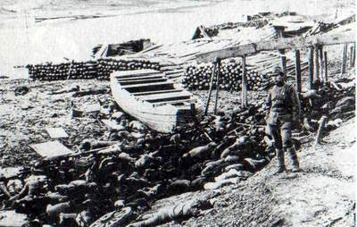

I think we all just need to sit a moment and remember the disaster that was Pearl Harbor, and remember the sleeping giant that was awakened.
'Aye.
Would this involve remembering the massacre of hundreds of thousands of innocent civilians in responce to an attack which cost a couple of thousand military casualtys?
Would this involve remembering the massacre of hundreds of thousands of innocent civilians in responce to an attack which cost a couple of thousand military casualtys?
Heh.
I guess a lot of bad things happened because of Pearl Harbor. To both sides, brocerius, but they were still instigated by the attack led by Japan. Whether or not other solutions were available is barely reconcilable for a modern America. There's a completely different climate in the world now. It's like saying that some medieval kingdom made a barbaric decision way back in the Middle Ages. It'd be a barbaric decision now, certainly.
Most folks don't understand why Japan attacked us. See, Japan was waging wars in the Pacific and killing millions of people in an effort for imperialism. In fact, Japan was damn near certain that it would own the entire Eastern hemisphere. Japan killed over ten times more civilians than Hitler ever could have hoped to kill. The human rights' violation associated with Japans acts were even more unspeakable than aspects of the Holocaust. I invite you to learn about their early attempts at biological weapons engineering.
Anyway, suffice it to say, Japan was being a menace to Eastern civilization. America was done funding Japan's war, so America held a steel embargo against Japan as well as other sanctions. Japan was unable to properly fund its war overseas, so they attacked America.
Would this involve remembering the massacre of hundreds of thousands of innocent civilians in responce to an attack which cost a couple of thousand military casualtys?
If this wasn't Serious Discussion I would flame you so hard you'd never want to come back here again. But I'm smarter than that so I'll just say If you didn't want to take a moment of silence for the thousands of Innocent Americns who were massacred or your not from America or one if it's friends and don't care. THEN DON'T POST. I find it very offensive that you said that, I really do. That you would imply our counter attack was unjustified. But that's not what this thread is about so just forget this post.
-----------------------
I do wish those Americans were still here they were brave men and women out there.
Methinks there is quite a difference between killing millions of people in conflict and dropping an atomic bomb on a city. Maybe there shouldnt be a difference, but that is another argument.
And yes, it was a different climate, and yes it may not have seemed that barbaric back then, but that is irrelevant. Maybe the holocaust didnt seem so bad to the soldiers who were brainwashed and bullied into commiting horendous acts, but that dosnt make it any less horrific.
And most folks dont understand why most wars happen. But it dosnt really matter. When a war happens, for whatever reason, it must be conducted in a reasonalbe manner.
I can see how there may be arguments for the bombings, in terms of ending the war as soon as possible, but i still cannot bring myself to agree with them.
I would also like to say that this isnt a purely anti-American rant here. What the British did to Dresden was easily comprable, and i am against it just as much.
Edit: fol67 posted that after me, sorry.
@fol67; this is serious discussion. Post a topic here and surely you must expect it to be discussed.
And no, i will not mourn for the Americans that were killed. If you were to mourn every death that happened you would spent the rest of your life in tears. Simply because they were killed in a more prominant way than the people that starve, or die of old age, or whatever every second does not mean that they should be mourned more.
Maybe i should refrase that; i will not mourn for them especially. I will maybe mourn for them as a part of the millions of people, whether American, Nazi, British, or Japanese that were killed in that time.
And yes, it was a different climate, and yes it may not have seemed that barbaric back then, but that is irrelevant. Maybe the holocaust didnt seem so bad to the soldiers who were brainwashed and bullied into commiting horendous acts, but that dosnt make it any less horrific.
And most folks dont understand why most wars happen. But it dosnt really matter. When a war happens, for whatever reason, it must be conducted in a reasonalbe manner.
I can see how there may be arguments for the bombings, in terms of ending the war as soon as possible, but i still cannot bring myself to agree with them.
I would also like to say that this isnt a purely anti-American rant here. What the British did to Dresden was easily comprable, and i am against it just as much.
Edit: fol67 posted that after me, sorry.
@fol67; this is serious discussion. Post a topic here and surely you must expect it to be discussed.
And no, i will not mourn for the Americans that were killed. If you were to mourn every death that happened you would spent the rest of your life in tears. Simply because they were killed in a more prominant way than the people that starve, or die of old age, or whatever every second does not mean that they should be mourned more.
Maybe i should refrase that; i will not mourn for them especially. I will maybe mourn for them as a part of the millions of people, whether American, Nazi, British, or Japanese that were killed in that time.
And most folks dont understand why most wars happen. But it dosnt really matter. When a war happens, for whatever reason, it must be conducted in a reasonalbe manner.
War by default is unreasonable. Tell me one war that was handled reasonably. It is virtually impossible to do so, because of the simple fact that it's a war.
For the topic: Yes, we shall...
War by default is unreasonable. Tell me one war that was handled reasonably. It is virtually impossible to do so, because of the simple fact that it's a war.
Of course, but i meant reasonalby by war-time standards. You know the kind of thing; dont kill prisonaers of war; dont kill civilians; dont conscript children; et cetera.
Ok fine, HiJAck my thready. You want a debate, I'll give you one. War cannot be orderly for if one side conducts it orderly the other side will surely take advantage of it, if they don't then it's realy not a war. And you say the fact that they died more prominanely means they shouldn't be mourned. Well did ya stop to think that those who die of old age are mourned, it's called family. And what do you mean you most certainly wont mourn them because there is to many. Its not that hard and most certainly wont take to long. I don't think you even understand how valuable life really is, I think you don't really value it enough to even understand how bad the loss of even one life is. A life is a fragile thing that can never be brought back or replicated, only remembered. Once someone gone they can never come back and they are lost forever. Get it, have a little heart, I mean really your post nearly made me gasp that some one could show such disrespect for the dead.
Surely you are showing more disrespect for the dead? Why do you mourn these people and forget all the others? I mourn them all, regardless of weather they were good, bad, American or Japanese. I will mourn Saddam Hussein. Every life is precious, not just the ones your country decides shoud be.
my friends dad is a veteran of pearl harbor
And my grandfather is a veteran of the Korean war. He used to tell of how he made 5 good friends while he was there. In one day, they all died. He used to say "You just don't forget seeing someone you love die." I think this is what we need to realize.
@Obby-Your granddad seems to have seen alot of things in his day.
@Broc-I never said I didn't mourn the enemies losses, but they were not my people if you want to set up a thread on the day we bombed them go ahead no ones stopping you, hell I'd make a post and pay my tributes.
@Broc-I never said I didn't mourn the enemies losses, but they were not my people if you want to set up a thread on the day we bombed them go ahead no ones stopping you, hell I'd make a post and pay my tributes.
Anyway, suffice it to say, Japan was being a menace to Eastern civilization.
...not to mention America's Western allies, Australia and New Zealand.
I'm not sure that nuking cities was the best idea. However, I do think it's too easy to look back and say "Oh, they should have done this." The fact is that we have information they didn't, and we're in a situation where it is much easier to sit back and analyse everything. At the time, there was this lunatic country charging around the Pacific and terrorising half of Asia, half of Europe was blowing up the other half, and it was thought the Nazis were on the verge of developing nuclear weapons. I can't really blame the US for being a bit quick to use the nukes.
I say kill 300,000 of the enemy than kill an estimated 1 million of your own soldiers and a retrospective 3 million of theirs. But you know, damn bombs. Its not like it was the right decision or anything.
Brocerius, its obvious that its you're anti-american and that you wish to disagree with us for fighting in a justified war after it was instigated against us. Would you have rather had FDR twiddle his thumbs while California was invaded and Australia, LITERALLY, bombed to just the kangaroos?
Brocerius, its obvious that its you're anti-american and that you wish to disagree with us for fighting in a justified war after it was instigated against us. Would you have rather had FDR twiddle his thumbs while California was invaded and Australia, LITERALLY, bombed to just the kangaroos?
My math teacher last year told us about her memories of pearl harbor. She's old. I am sorry for the loss at pearl harbor, but again, I think it is a little exaggerated, like the Alamo. Sad though it is, it was still a relatively small military loss. There are many worse tragedies throughout even our countries own history. Again, I am not saying that it wasn't a terrible loss. Still, it was good that America got involved with the war in the Pacific, because it lead to a halt to the violence already going on there.
Actually, I used to think it was wrong that we dropped the a-bomb, (my little joke) but after really studying modern eastern history, I have decided that we did the right thing. The atrocities committed by the Japanese armies in Korea and China are truly staggering, and its amazing how overlooked they are in the U.S. I had no idea of the scope of the violence until last year. (*embarrassed*)
example
Amazingly, Chinese-Japanese relations today still suffer terribly from this, you may have heard of the recent scandals over the ex-president of Japan's visit to a famous monument that comemorates Japanese "war-heroes," men who committed terrible war crimes.
If you happen to be really interested, read this. V
Actually, I used to think it was wrong that we dropped the a-bomb, (my little joke) but after really studying modern eastern history, I have decided that we did the right thing. The atrocities committed by the Japanese armies in Korea and China are truly staggering, and its amazing how overlooked they are in the U.S. I had no idea of the scope of the violence until last year. (*embarrassed*)
example

Amazingly, Chinese-Japanese relations today still suffer terribly from this, you may have heard of the recent scandals over the ex-president of Japan's visit to a famous monument that comemorates Japanese "war-heroes," men who committed terrible war crimes.
If you happen to be really interested, read this. V
Sad though it is, it was still a relatively small military loss.
 No, it wasn't. It was huge. It depleted the American Navy vastly. Plus, there was a stigma that America was impenetrable because of it's location. Pearl Harbor proved it wasn't.
No, it wasn't. It was huge. It depleted the American Navy vastly. Plus, there was a stigma that America was impenetrable because of it's location. Pearl Harbor proved it wasn't.And yet millions of troops were lost on the western front.
To what end are you arguing, brocerius? I mean, it's okay to think that using the atomic bomb was bad. I just think you went there from, well, nowhere. The topic was: "We should honor those who died in Pearl Harbor." and you said "No. America used the atomic bomb and killed civilians in Japan." I just don't think the argument anturally follows, man.
Why, again, should we not honor those who died at Pearl Harbor? Is it because this thread neglected to mention every other casualty of WWII? I think that's a silly reason. If I made a thread honoring the life of Steve Irwin, would you get angry at me for forgetting about Princess Di? The whole argument is ludicrous.
You're attacking this thread because you believe that those who would honor the dead of Pearl Harbor wouldn't care about everyone else. That's a nasty assumption to make, and I assume you must make similar assumptions about most Americans. I honor lots of dead people. Just not all at once. I don't think I would criticize someone who made a thread called "Let's honor the civilians who died in Japan" come August; and I certainly wouldn't divert the topic to talk about honoring someone else instead.
I can tell you're only arguing, brocerius, because you presume something about us simply on the basis of nationality, or who we would honor on December 7th. After all, Wolfgang Paul--German physicist and Nobel Prize laureate--also died on December 7th, and you didn't even mention him, brocerius. You're a total jerk.
Why, again, should we not honor those who died at Pearl Harbor? Is it because this thread neglected to mention every other casualty of WWII? I think that's a silly reason. If I made a thread honoring the life of Steve Irwin, would you get angry at me for forgetting about Princess Di? The whole argument is ludicrous.
You're attacking this thread because you believe that those who would honor the dead of Pearl Harbor wouldn't care about everyone else. That's a nasty assumption to make, and I assume you must make similar assumptions about most Americans. I honor lots of dead people. Just not all at once. I don't think I would criticize someone who made a thread called "Let's honor the civilians who died in Japan" come August; and I certainly wouldn't divert the topic to talk about honoring someone else instead.
I can tell you're only arguing, brocerius, because you presume something about us simply on the basis of nationality, or who we would honor on December 7th. After all, Wolfgang Paul--German physicist and Nobel Prize laureate--also died on December 7th, and you didn't even mention him, brocerius. You're a total jerk.
I think I speak for many people here by saying....
Burn.
Burn.
I felt the strange feeling in my knickers too Obby.
Fol67: The counterattack America made on Japan was unjustified.
What we should have done was attack military bases, not nuke a city entirely lacking a military force.
Then again, I also agree with Atilla. Though I greatly disagree with the choice America made, I don't think it's reasonable for me to expect America to have made any other choice.
What we should have done was attack military bases, not nuke a city entirely lacking a military force.
Then again, I also agree with Atilla. Though I greatly disagree with the choice America made, I don't think it's reasonable for me to expect America to have made any other choice.
Well the anniversary of pearl harbor is over so I am requesting this thread be locked.
^^^ Lol, I thought this whole thread was just random until you said that.
Er...uh....You didn't know. We had an hour long class on pearl harbor in social studies class toady, lol.
Locked on request. I think we've all learned a valuable lesson here? [sic]